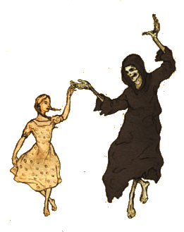

Overview of the Book
On this page, I would like to highlight one of my favorite books, "The Book Thief" by Markus Zusak. The story takes place in Germany during the World War II. It depicts the lives of ordinary people in Nazi Germany so beautifully. Narrated by Death, the story gives the audience a unique perspective to human nature, and reminds us of the brevity of life.
The Novel was first published in 2005, and became an international bestseller. As of today, it has been translated into 63 different languages and sold over 17 million copies worldwide. It has received yet even more recognition when film makers adapted the novel into a film "The Book Thief" in 2013. The film was directed by Brian Percival.

"I've seen so many young men over the years who think they're running at other young men. They are not, they are running at me."~ Death, "The Book Thief"